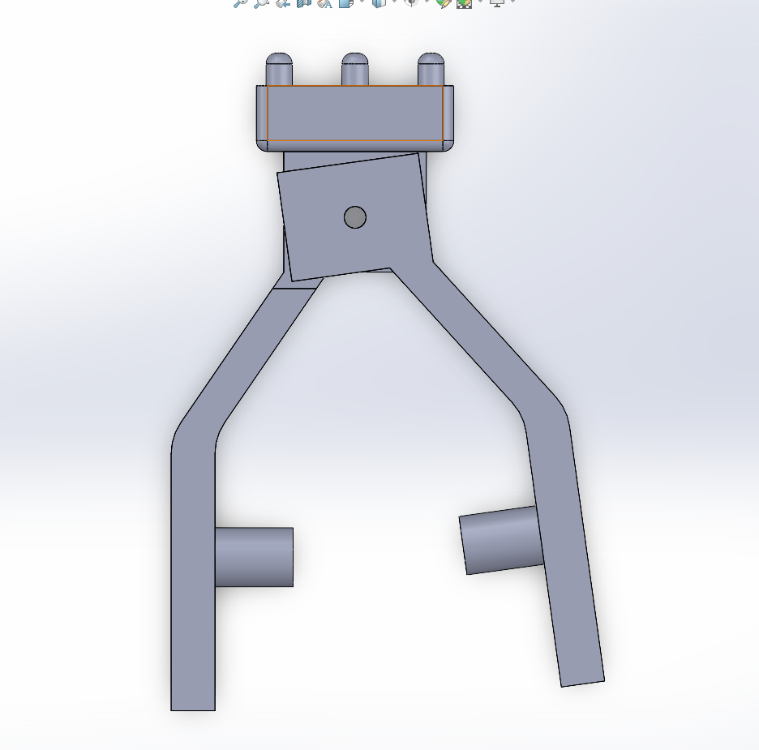
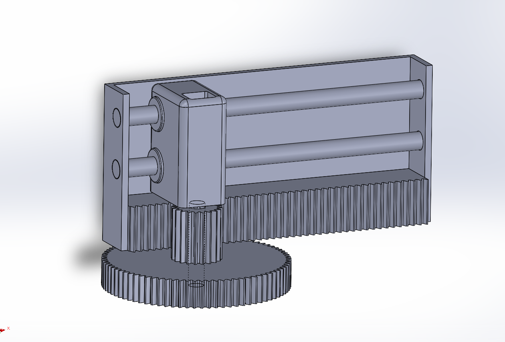

Personal Project — Spring 2026 to Present
MatchaBot
What: Engineered an automated matcha whisking device that replicates the traditional chasen’s zigzag motion, performing gear calculations and mechanical design to convert rotational motion into whisking action.
How:
- Modeled in SolidWorks and created rapid prototypes with 3D printing for testing.
- Integrated Arduino limit switches and a rack and pinion to acheieve the zigzag motion for the whisker.
Next Steps: Continue improving functional design and structure for smoother whisking process. Adjusting limitswitches to create customizable for multiple bowl sizes as well as integrating a timer system to improve user experience. Conduct user testing.


